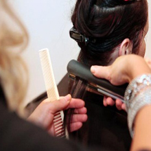
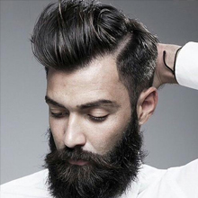

Salon fryzjerski w Koninie
Twoj ulubiony fryzjer i golibroda w jednym miejscu od 1973 roku!
Nasz salon to jeden z najstarszych salonów fryzjerskich w Koninie. Pierwszych klientów obsłóżyliśmy w 1973 roku. Od progu zostaniesz powitany przez zespół profesjonalistów, który dba o dobrą atmosfere oraz jest do Twojej dyspozycji.
Historyczny salon fryzjerski
Salon fryzjerski jest owocem rodzinnej współpracy stworzony w 1973 roku przez Danute i Bogdana. Ich córka Ewelina z tą samą pasją dołączyła w 1981 roku. W 1915 uwcześni właściciele postanowili oddać salon córce Ewelinie.
Nasz cel
Naszym celem jest przeprowadzenie Cię przez zmiany w drodze do poprawienia Twojego wizerunku i osobowości. Korzystając z różnych technik odmieniamy ludzkie oblicza. Oferujemy również doradztwo techniczne i porady w zakresie ciecia brody.
Usługi
Nasz salon oferuje wszystkie usługi dostosowane do Twoich potrzeb, każdego rodzaju włosów, dla mężczyzn, kobiet i dzieci. Niezależnie od tego czy chodzio stylizacje, cięcie, strzyżenie, farbowanie, czy konkretne wydarzenie (ślub, bal etc)
Produkty wysokiej jakości
Do codziennej pielegnacji bedziesz mógł kupić na miejscu szeroką gamę szamponów i odżywek. Oferujemy różne profesjonalne marki, również używane w salonie. Wśród najbardziej znanych L’Oréal Professionnel, INOA Coloration du futur, Redken, GHD.